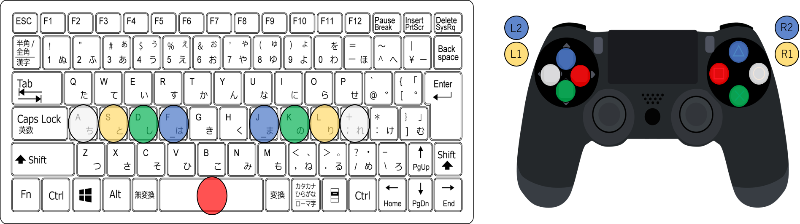

このページの内容について
SPRING 9KEYS BLOSSOM 2020 は 2020/05/03 をもって評価期間が満了し、イベント終了となりました。
このページの内容は資料として残しておきますが、時系列が矛盾していたり、古い情報を掲示している可能性があります。
(2023/07) PMSの導入方法に関する記事は About & Guide 内に再編しましたので、導入方法を知りたい場合はこちらをご参照ください。
「SPRING 9KEYS BLOSSOM 2020 へのお誘い」コラム本編を開く (クリックで開閉)
この春、実に5年ぶりとなるPMSイベント SPRING 9KEYS BLOSSOM 2020 (S9B2020) が開催されます。
昨今PMSは、騒音問題や大型難易度表が機能していないことも影響し、プレイヤー数が非常に少なくなってきていると感じます。
PMS Database としては、イベントの成功と共に、この機会にたくさんのBMSプレイヤーの方々とPMSの楽しさを共有したいと考えています。
そこでこのページでは、これから初めてPMSを遊んでみようと思う方(BM/KB問わず)向けの情報を簡単に紹介します。少しでも興味を持っていただける方が増えることを願っています。
イベント情報
SPRING 9KEYS BLOSSOM 2020 (会場へはバナーからどうぞ)

Registration: 2020-04-05 / 2020-04-12
Impression: 2020-04-12 /2020-05-03
X(Twitter): ＠9keys2020
これからPMSを触ってみたい方へ
BMS環境は揃っているけれどPMSは触ったことがなく、遊ぶとしてもKBやアナコンプレイになる、というような方を想定して紹介していきます。
BMSも遊んだことがなくて導入方法が分からないという方、むしろ本格的にPMS環境を構築する方法から知りたいという方は こちらの導入ガイド を参照してください。
プレイスキンの構築
Light Pop EX (misty.ls04氏)【LR2専用】
本家AC画面に慣れている方はまずこれで間違いないと思います。オンラインマニュアル完備。
OVER ACTiVE DX 9key改 (980円の人)【LR2専用】
SP風のプレイ画面になります。SPBMSに慣れている方向け。(動画)
REMI-PMS【LR2専用】
SPとDPの中間的なスキン。一風変わっていますが、DPBMS慣れしている方にはしっくりくるかもしれません。(動画)
LITONEシリーズ【beatoraja専用】
LITONEシリーズにはPMSスキンが同梱されているので、通常こちらを利用している人は問題ないと思われます。
キーコンフィグ関連
寄せられたご意見を参考に配置してみました。アナコンはPSP版の初期配置を流用しています。赤ボタンなど片手で処理するのが難しい箇所は複数アサインで対処します。

【補足】ポプコン使用時の右黄色問題について
ポプコン(ACコン含む)をPCに接続すると、右黄色が押しっぱなしになる/反応しないという報告が多数あります。KB/アナコンには無関係ですが、ここで対処方法をまとめておきます。
※ Joytokey やポプコンを選曲に使うにチェックする方法が紹介されている場所がありますが、諸般の理由から現在これらは非推奨です。
(こちらに画像つきの詳細な解説があります)
(1) ポプコンをPCに接続します。コンバータを介していても問題ない(はず)です。LED電力供給用のUSBケーブルはPCに接続せず、別コンセントを用意して接続してください。
(2) Win10の場合、左下検索窓に「USB ゲーム」と入力し、USB ゲーム コントローラの設定 画面を立ち上げます。
コントロールパネル > デバイスとプリンターの表示 > 対応するゲームコントローラを右クリック > 設定 でも同様 Win8以前のOSでも似たような手順で辿りつけます。
(3) ポプコンを選択してプロパティ > 設定タブから 調整 > (ポプコンには触らずマウスで) 次へ を設定完了までクリック。これで右黄色問題は解消されます。
(4) プレイヤーを立ち上げ、キーコンフィグで改めてボタン設定しましょう。このとき LR2 SETUPで「選曲にポプコンを使用する」をチェックしている場合は外してください。
※選曲画面は7keysのキーコンフィグ準拠なのでポプコンで選曲するのは難しいです。マウスを使用してください。
今HOTなPMSが入手できる場所
BOFXV PMS差分企画
(マーケティング) 同梱曲含め 181曲 530譜面 低難易度も割とあります！
Toy Musical 3
厳密にはナナシグルーヴ2専用なのでPMSではないですが、更新を再開された今が一番アツいコンテンツなので強くマーケティングします。
低難易度PMSがたくさん入手できる場所
初心者のKBプレイでも楽しめそうな低難易度譜面がたくさん揃っている場所を紹介します。
当サイトの Normal Records はその差分オリジナルの難易度表記ではなく、独自に再査定した上で登録しています。地力上げのお供にいかがですか。
Toy Musical / Toy Musical 2
Colorful Canvas / Colorful Channel
BMSを遊びこんでいる方はパッケージで所持している方が多いのではないでしょうか。保管サイトなどで入手した方も同梱PMSは所持されていると思うので一度チェックしてください。
Y.Wさん主催の SPRING 9KEYS ROAD 2011他3回の「四季PMSイベント」
S9B2020の原題とも言えるイベントです。(当サイトでは事情につきミラーからの一括DLを推奨しています。イベント会場から入手したい方は各自でお願いします。)
BOFPMS差分企画
毎年数百譜面ずつ増えているので結構な数の低難易度があります。(ただし上記2種に比べると高難易度比率は高いです)
DLリンクもまとめてあるので詳しくはリンク先へどうぞ。
PMSの譜面作成に敷居を感じているBMS作者さんへのマーケティング
PMS譜面の作り方(Y.Wさん+月山さん)
PMS差分制作のアレコレ(西ヶ蜂さん)
無理押し配置の解説(asagaolabo)
無理押しを含むPMS譜面ミスチェッカー(dozenさん) ←必携！
PMSをキーボードで遊ぶときの同時押しについて(oxygenさん)
本家っぽいTOTAL値の調整方法の参考記事(misty.ls04さん)
個人で譜面製作される場合は、S9B2020サイト併設の PATTERN FEEDBACK SERVICE でフィードバックを求めてみても良いかもしれません。
筆者個人としては、まずは7keysの感覚で深く考えず配置して頂ければいいと思います。★20 Air -GOD- をアケコンで戦う人も存在するので、配慮しすぎることはありません。
レベル表記も大雑把で構いません。難易度体系が7keysと大きく異なり、慣れていない作者さんに厳密な数字付けをお願いすることは酷であることを理解しています。
ただ、意図しない無理押しはゲーム性を大きく下げてしまうので注意してください。上記のミスチェッカーで簡単に調べられるので、手慣れた差分作者さんでも必携のツールです。
譜面を委託したいと考えておられる場合は、Xで発信されるのがオススメです。PMS差分作者サイドからは既に委託を受けられるという方が複数出てきておられる状況です。
S9B2020公式や、 ＠pmsdatabase に直接相談していただいても対応できるかもしれません。(秘密厳守をお約束します)
その他
何か思いついたら追記します。
質問や要望は ＠pmsdatabase にお寄せください。筆者にも分からない場合がありますが、出来る限りお答えします。
友人の方、興味を持ってくれそうな方などおられましたら、積極的に宣伝していただけると助かります。そして何より、一度遊んでみてください！